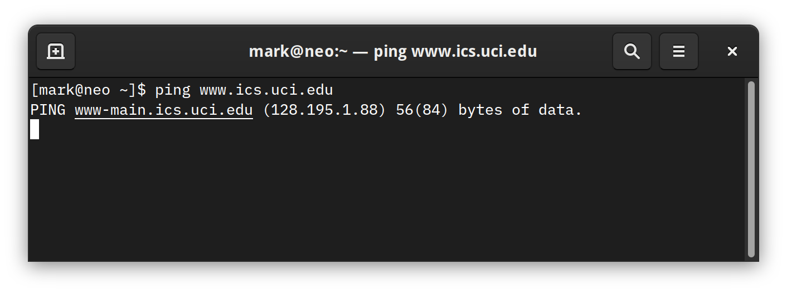
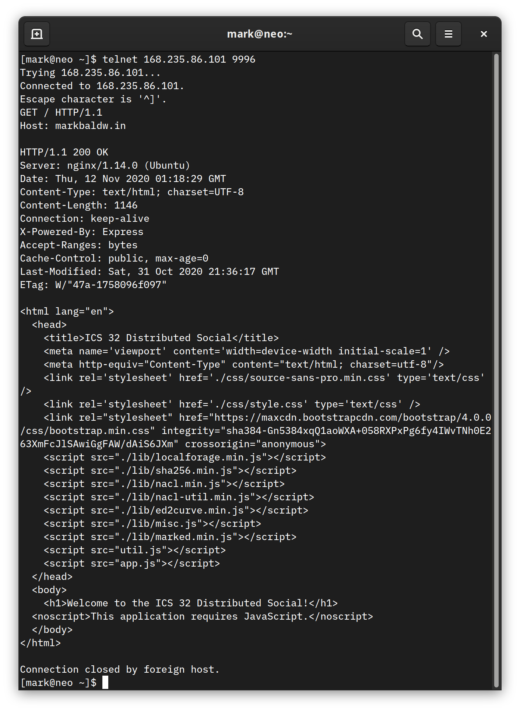

Week 6 Notes¶
Note
Keep an eye weekly pages as they might be updated throughout the week.
Week 6 Overview¶
Lecture Materials¶
- Lectures for Week 6
HTTP and URLs¶
Videos¶
Notes¶
In the protocols lecture, we used the HyperText Transfer Protocol (HTTP) as an example of a common type of protocol that is used to send and receive data between a client and server computer. HTTP is a request/response protocol that is used by nearly all web traffic for communication and behaves roughly according to the following diagram:
A client (the laptop) initiates a connection with a server (the black box) to which the server can either accept or, for a variety of reasons, reject. If the server accepts the connection, the client then proceeds to issue requests. Each request issued by the client receives a response from the server. This basic request/response dialogue is occurring every time you visit a website. The URLs that you type into your browser represent the address or location of the server you would like to connect to. Now digging into the underlying infrastructure of the Internet is a bit beyond the scope of this course, but it’s important to understand that the textual URLs that we use are primarily designed to make finding and recalling servers easier for humans. The actual identifier the server responds to is a numerical address called an Internet Protocol Address, or IP Address. Every URL that we type into a browser is associated with an IP Address. You can discover this for yourself by using the ping program that is packaged with most operating systems:

The association between IP Address and the human readable URLs that we use is called a Domain Name Server or DNS. DNS is operated by numerous third party organizations who ensure that the human readable domain names are unique and connect to the correct server IP Addresses.
Alright, now that we have a basic understanding of HTTP, URLs, and IP Addresses, let’s take a closer look at how HTTP actually works. In the example below, a program called telnet was used to issue a GET request to the ICS 32 Distributed Social website. The response from the server begins with the following line that reads “HTTP/1.1 200 OK”. Everything before that was input and output with the telnet program. (If you are on Linux or OSX you should have telnet installed by default. On Windows you can try this with a program called Putty.

The server responds with an HTTP header that contains some information about the web page we are requesting. What we are primarily concerned with here is the first line, particularly the use of the status code 200. The specification for HTTP 1.1 includes over forty status codes that a fully featured program that makes use of HTTP should be able to handle. However, for our discussion here, as well as the work required in assignment 3, you will only need to be concerned with a few of the most common status codes:
- 200 OK
Indicates the status is OK.
- 400 Bad Request
Indicates the HTTP request sent to the server contains invalid syntax
- 401 Unauthorized
Indicates that the requested resource is not authorized to be returned in a response
- 403 Forbidden
Indicates that a requested resource is protected by the server
- 404 Not Found
Indicates that a requested resource is not available on the server
- 500 Internal Server Error
Indicates that the server is unable to process the request
- 504 Gateway Timeout
Indicates that the server was unable to respond to a request within the allowed time period
You have likely encountered at least one of these while browsing the web (and the 400 level errors might sound familiar if you watched the final season of Mr. Robot!).
So far we have been discussing HTTP within the context of programs like telnet, Putty, and your web browser. However, there is nothing particularly special about any of these programs. They are just programs, written in a programming language, and understand how to communicate with servers using HTTP. So, just like your browser, we can use a programming language to accomplish the same goals. While Python does have libraries available for building robust programs that leverage the full HTTP specification, it also includes some higher level abstractions modules that can be used by programs that only need to perform some basic HTTP requests with a server. So for the remainder of this lecture, we will focus on working with the simplest of those modules, urllib.
urllib¶
The urllib package contains several modules that are useful for working with and requesting information from URLs:
urllib.request
urllib.error
urllib.parse
urllib.robotparser
You can read more about each in detail at the Python Documentation website. For this lecture, we will be focusing on the urllib.request and urllibparse, however, you will want to familiarize your self with the urllib.error module as well for handling exceptions raised by urllib.request.
urllib.parse¶
The urllib.parse module provides functions for parsing URLs:
from urllib.parse import *
u = urlparse("https://ics32-fa20.markbaldw.in/notes/wk6.html")
print(u)
>>> ParseResult(scheme='https', netloc='ics32-fa20.markbaldw.in', path='/notes/wk6.html', params='', query='', fragment='')
The urlparse function accepts a URL string as a parameter and returns a named tuple containing the attributes and values of the supplied url. You can read more about what each of the attributes means at the Python Documentation page linked above.
In the classes lecture, we learned about how to use constructor parameters to control how the classes we write are instantiated. We discussed the dsuserver parameter and how we might want to validate the parameter before we allow the Profile class to be instantiated. Well, the urllib.parse module provides one way to go about performing that validation. Let’s try and parse our URL for the Distributed Social server:
uri = "ws://168.235.86.101:9996/ws"
u = urlparse(uri)
print(u)
u = urlparse("")
print(u)
>>> ParseResult(scheme='ws', netloc='168.235.86.101:9996', path='/ws', params='', query='', fragment='')
>>> ParseResult(scheme='', netloc='', path='', params='', query='', fragment='')
Notice how when the correct URL is specified we receive a named tuple with the scheme attribute set to ‘ws’ (because we are using the websocket protocol for communication). Yet, when an empty string is supplied, the scheme is an empty string. So this is just one way we could ensure that the dsuserver parameter is valid. Of course, it would be much simpler just to check if the parameter is an empty string, however, that is only one of many possible error conditions that may arise when someone uses the Profile class. Therefore, applying a robust validation process like urlparse can protect us from a variety of error conditions.
Let’s try to parse one more URL, but this time something a little more complex. In the next example I will borrow a URL from the assignment 3 overview:
uri = "https://api.openweathermap.org/data/2.5/weather?zip=92697,US&appid=b64a375a083d857905dad51eb470980a"
u = urlparse(uri)
print(u)
print(u.hostname)
print(u.scheme)
print(u.query)
>>> ParseResult(scheme='https', netloc='api.openweathermap.org', path='/data/2.5/weather', params='', query='zip=92697,US&appid=b64a375a083d857905dad51eb470980a', fragment='')
>>> api.openweathermap.org
>>> https
>>> zip=92697,US&appid=b64a375a083d857905dad51eb470980a
Now the ParseResult named tuple also contains a value for the query attribute. And because we are working with a named tuple, using dot notation, we have direct access to each of the values parsed from the supplied URL. Alright, in the next section we will conclude with a closer look at urllib.request.
urllib.request¶
The urllib.request module provides a variety of functions for creating and working with HTTP requests. Most of these functions support features that we will not be concerned with in this course. Instead, we will focus on the core function in module, urlopen, that accepts a URL as a parameter and returns an HTTPResponse object that contains the response from the server specified by the URL. Let’s start by calling urlopen on the ICS32 Distributed Social website:
from urllib.request import urlopen
uri = "http://168.235.86.101:9996"
res = urlopen(uri)
data = res.read()
res.close()
print(data)
b'<html lang="en">\n <head>\n <title>ICS 32 Distributed Social</title>\n <meta name=\'viewport\' content=\'width=device-width initial-scale=1\' />\n <meta http-equiv="Content-Type" content="text/html; charset=utf-8"/>\n <link rel=\'stylesheet\' href=\'./css/source-sans-pro.min.css\' type=\'text/css\' />...\n\n'
First, notice that the HTTPResponse object is closed when operations on it are complete. As with file objects and sockets, HTTPResponse makes use of a binary stream to retrieve and store data. Since it is a stream, we have access to many of the same operations, like read(). Calling the read function returns the response body returned from the urlopen request. The response body is basically whatever content existed at the specified URL, which in this case is the HTML stored in the root file on the server. Looking at the print out of the response data, however, you will notice that it is prepended by the character ‘b’ (also note that the response data has been manually trimmed down for aesthetic purposes, indicated by the addition of the ‘…’ characters). When we print data to the shell, the addition of the ‘b’ character indicates that what we are looking are bytes, not a string. To work with the bytes stored in the variable data like a string, we must first convert from a type of bytes to a type of string:
print(type(data))
text = data.decode(encoding = 'utf-8')
print(type(text))
>>> <class 'bytes'>
>>> <class 'str'>
decode and encode are built-in functions of the bytes type that support converting between bytes and strings. The encoding type of UTF-8 tells the encoding and decoding functions what type of bytes we expect. For the most part, in the work we do in this course, it is safe to assume that strings will be encoded using UTF-8. However, in the real world, different computing systems and regions of the world quite frequently use different types of encoding, so it is always good practice to ensure you are using the right encoding. How do we know? Well, take a minute to scroll back up to the telnet example. You will notice in the screen shot that the HTTP header we received from our GET request has an attribute called Content-Type which specifies the encoding character set for the page! Fortunately, HTTPResponse makes it easy to retrieve the header content:
header = res.getheader("Content-Type")
print(header)
>>> text/html; charset=UTF-8
So now, with a little string manipulation on the header value, we can specify our encoding type without having to guess.
Web APIs¶
Notes¶
Now that you have had some time to practice working with modules and learned a little bit more about how we can use Python to talk to the Internet, let’s take a close look at some of the ways we can use the urllib module to expand the types of information available to our programs.
The Internet makes it possible to find information about practically anything a person might want to learn about. In the HTTP and URLs lecture, you learned how to use the urlopen function to retrieve content from a URL. For most URLs, this means the data retrieved by urlopen is intended to be used by programs like a web browser. But what if you want to retrieve information in a format more suitable for inclusion in a program that is not web browser?
Many websites or web services that produce data suitable for consumption outside of a browser publish an Application Programming Interface, or API. Rather than have to write code to extract the data you want from content formatted for the browser, an API explicitly formats data in a structure that is intended to be consumed from any type of program. One of the most common formats, which you are already familiar with, is JSON.
In some cases, an API will require you to go through some form of authentication. Depending on the type of authentication used, this process can be quite involved. One of the more common types of authentication is the API key. Key’s allow the API provider to track and optionally reject requests that either use an invalid or expired key. This gives the provider some assurances against automated or malicious requests.
Some API’s, particularly those that are open or don’t require a key, opt to reject requests when they don’t like the way it looks. Let’s take a look at one example:
https://api.kanye.rest/
Which, when viewed in the browser works fine, but when requested using urlopen does not (it returns a 403 forbidden message). What this tells us is that the API is likely looking for a little more information from the request. Requests without traditional HTTP headers are often interpreted as potential bot/malicious attack threats and so they are often automatically blocked by most API servers. So, we need to modify the request to behave more like a web browser.
import urllib, json
from urllib import request,error
def yeezy():
url = "https://api.kanye.rest/"
user_agent = "Mozilla/5.0 (Windows NT 6.1; Win64; x64)"
headers = {'User-Agent': user_agent}
request = urllib.request.Request(url, None, headers)
response = urllib.request.urlopen(request)
json_results = response.read()
r_obj = json.loads(json_results)
print(r_obj)
if __name__ == '__main__':
yeezy()
In the code above, notice that a Request object is created using the url variable and a headers object that contains the same user agent that FireFox on Windows 10 would send. The request object is then passed to urlopen rather than the raw URL that we’ve used in previous examples. Now, with more a ‘browser-like’ appearance, the API can successfully return a quote from Kanye Rest:
{'quote': "I love sleep; it's my favorite."}
You may have also noticed the use of None in the Request object parameter list. We’ve used None here, because we are only interesting in getting something from the supplied URL. But what if we also want to send something? Let’s take a look at the object definition adopted from docs.python.org:
class urllib.request.Request(url, data=None, headers={},
origin_req_host=None, unverifiable=False, method=None)
The data parameter, specified here, can used to send data to a URL. Since Yeezy doesn’t require any particular information from us there was no need for us to use this parameter, however, there are cases where sending data might be necessary. If you’ve ever filled out and submitted a form in a browser, for example, you are sending data to a URL. Recall from the HTTP and URLs lecture that we talked about how HTTP is used to make GET requests to retrieve the content from a URL. Well, GET is one of many request methods made available in the HTTP specification. When data is submitted to a server using HTTP, the POST method is used to inform the server to expect a packet of data in the HTTP request. Let’s take a look at how we can add data to a urllib request and send it to a server:
import urllib, json
from urllib import request,error
def send_data(data: str):
# the url and port of the ICSHTTP Simple Server:
url = 'http://localhost:8000'
# create some data to send, we'll use json format
json = {'data' : data}
# properly encode the data for the request object
data = urllib.parse.urlencode(json)
data = data.encode('utf-8')
# set a header, with content type. We don't need to specify user agent here
# since we are just sending to a custom server
headers = {'content-type': 'application/json'}
req = urllib.request.Request(url, data, headers)
# make the call, and print the response
with urllib.request.urlopen(req) as response:
resp = response.read()
print(resp)
if __name__ == '__main__':
while True:
send_data(input("What would you like to send? "))
In this program, we add JSON data to the Request object, though it doesn’t have to be JSON. We could have also sent XML, HTML, a file, plain text, and many more. Once we have determined the type of data to send, the content-type should be set to match. content-type is specified in the header and accepts a descriptive value that follows very specific formatting rules (see the previous link for a table of the various types and how they match to data). Once the request object is prepared, as with the previous example, it is sent to the desired server using the urlopen function. In the example above, we use the with statement to handle the state of the response object.
To demonstrate how data is transferred over HTTP, let’s create a simple HTTP server to listen for POST requests.
import http, socketserver
from http import server
"""
This is a subclass of the BaseHTTPRequestHandler class which provdies methods
for various aspects of HTTP request management. Since our only goal is to
show how POST data works, this class simply renders and prints data when a
POST request is received.
"""
class ICSHTTPRequestHandler(http.server.BaseHTTPRequestHandler):
def do_POST(self):
print(self.command + " received.")
data = self.rfile.read(int(self.headers['content-length']))
self.send_response(200)
self.send_header('Content-Type', 'application/json')
self.end_headers()
self.wfile.write("ok".encode(encoding = 'utf-8'))
print(data.decode(encoding = 'utf-8'))
"""
This is just basic startup code to run the TCPServer that accompanies
the Python standard library.
"""
PORT = 8000
handler = ICSHTTPRequestHandler
httpd = socketserver.TCPServer(("", PORT), handler)
print ("serving at port", PORT)
httpd.serve_forever()
The server here is quite rudimentary, it can only handle the very specific requests that we will be sending to it using the client POST request program above. Since we are conducting a deep dive into the http library for this course, we will only take a cursory pass at the code here. However, if you would like to build out this small HTTP server program a little more, feel free to use this code.
To build a minimal viable HTTP server in Python, we can rely on the http and socketserver modules to manage most of the heavy lifting. The only code we will need to create is a custom request handler and a few lines to start the TCPServer that is included in the socketserver module. Python’s http module includes a couple of request handlers for basic requests (SimpleHTTPRequestHandler and CGIHTTPRequestHandler), but neither of these support POST requests by default. So we have to create our own! Fortunately, the http module also provides a BaseHTTPRequestHandler that we can build upon (more on that in the Advanced Inheritance lecture).
The ICSHTTPRequestHandler class overrides the inherited method do_POST to process incoming POST requests. The details of how this is done, are bit out of scope for this course, but you’ll notice that we are essentially extracting the data from the request, preparing and sending a response to the client, and then printing the data to the console. In a real application, we would likely need to do something other than print to console though. A traditional HTTP server might send that data to another process to be interpreted or stored somewhere.
The lecture video will contain a running example of all of these programs, but you are STRONGLY encouraged to try running them yourself too! If you would like to learn a little bit more about how to work with HTTP data in Python, you can start by reading the overview at docs.python.org.
I have included one additional look at Web API’s using the Spotify API. A walkthrough can be found in Part 2 of the lecture. I don’t plan on writing up notes for the Spotify API, but the files for the program are included below.